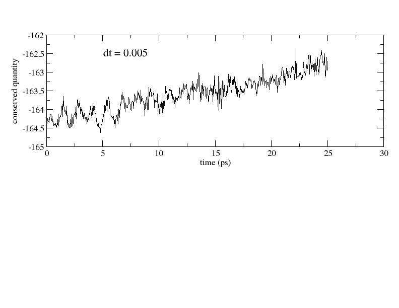

Tutorial for Classical MD
General Instructions
Download DLPOLY.tar from the ftp site and un-tar it to obtain all the material needed
for this exercise. One of the files you should find is "tutorial.html" which you can open for
your own convenience.
Now we will compile the code. To do this move to the srcmod directory.
Type: make clean (to delete any files from old compilations)
Type: make gfortran (you should see that the different files in that directory are
getting compiled
Once this is successfully completed you should see a DLPOLY.X executable in
the execute directory which is one directory above the current one you are working
in. Simply do: cd ../execute/ and check to see if there is a DLPOLY.X
executable in there.
We are now almost ready to make the atoms dance!
After each DLPOLY MD simulation there will be a file called STATIS that contains A LOT
of information on the conserved quantity, temperature, potential energy etc etc
We will use a small function pickstatis to extract some information from the STATIS file
so that we can plot it in xmgrace.
Put the information in the pickstatis.txt file into your .bashrc file. Then do
source .bashrc . Then we run it as: pickstatis 1 < STATIS > output.dat
Exercises:
In the first exercise we will explore how one chooses the timestep
in an MD simulation.
For all the short exercises to follow, we will use an open source MD
code called DLPOLY. In order to run DLPOLY you will need 3 files namely
CONFIG, CONTROL and FIELD. The CONFIG file contains the atomic coordinates
of the atoms. The CONTROL file contains the parameters needed to run
the molecular dynamics simulation. The FIELD file contains the information
on the forcefield
Exercise 1: Choosing the timestep in an MD simulation
Choosing the timestep for your MD simulation is a critical part of setting up
the simulation.
Open up the CONTROL file by using your favorite text editor (the instructions below use
the emacs editor but feel free to use vi as well). Type:
emacs CONTROL &
In the first two lines you should see:
steps 5000
timestep 0.005
This tells DLPOLY that we will run an MD simulation of 5000 steps with a timestep
of 5 femtosecond. In this exercise we will run a simulation
of total length 25 picoseconds, this is because the default unit of time in DLPOLY
is picoseconds. This maybe different for other codes.
Now type the following to run the DLPOLY executable:
Step 1:
../dl_poly_2.20/execute/DLPOLY.X
This will run for a couple of seconds and then should generate several files such
as HISTORY, OUTPUT, STATIS. For now we are particularly interested in the STATIS
file. Using the function pickstatis which is located in your .bashrc file, we can
look to see whether the timestep we have chosen is good or not.
In an MD simulation, it is always important to check whether the conserved
quantity is actually conserved. The simulation that you just run is in the
NVT ensemble where the conserved quantity is the sum of the total potential
energy, total kinetic energy and the energy of heat reservoir that controls
the temperature of the system. Lets look at the conserved quantity for the
simulation that you just ran. Type the following:
pickstatis 1 < STATIS > engcons.dat
Now lets look at the conserved quantity using a plotting program such as xmgrace.
Type:
xmgrace engcons.dat &
You should now obtain a plot that looks something like the following:

As you can see that there is a significant drift in the first 25 ps and that the
drift is likely to increase even more over a much longer run. Thus the conserved
quantity is not conserved . We are in trouble and need to change
the timestep of our simulation. Lets first save the data we have generated from
this MD simulation for future reference. Lets create a directory called Run1 and move
the some of the data files into that directory. Do the following:
mkdir Run1
Now do:
mv engcons.dat HISTORY STATIS OUTPUT Run1
Then we want to cleanup the directory with other files present that aren't needed
at this point. In your bin directory there should be a script that does this. Type
the following:
~/bin/cleanup.sh
Open up the CONTROL file again and change:
dt = 0.005
to the following:
dr = 0.001
Now go back to Step 1: above repeating the exercise.
You should now obtain a plot that looks something like the following:

Exercise 2: Thermostating the system to a desired temperature
In this exercise we will try to learn about how we can use thermostats
to control the temperature in a simulation. As you have learnt already, one
can do MD simulations in three ensembles: NVE, NVT and NPT. In this exercise
we will focus on the NVT ensemble (N = number of atoms, V = volume, and T =
temperature). The thermostat that we will use is the Nose-Hoover thermostat
which we have briefly overviewed in the lecture.
Open the CONTROL file again and look for the following two clauses:
temperature 100
ensemble nvt hoover 5.0
The first line tells DLPOLY that we want to do a simulation at 100K.
This second line tells the DLPOLY code that we are going to run a simulation in the
NVT ensemble using the Nose-Hoover thermostat with a time constant of 5.0ps. This
time constant dictates how strongly the thermostat is coupled to the the system.
This provides an indirect way to control the temperature of the system. Lets
take a look.
Lets run the DLPOLY code again as we did before using the following:
../dl_poly_2.20/execute/DLPOLY.X
Once this is finished it will generate the STATIS file as before. Now do the following
to extract the temperature from the runs:
pickstatis 2 < STATIS > engtemp.dat
Now lets plot engtemp.dat using X-Mgrace. Does the temperature fluctuate around 100K?
Lets now repeat the exercise using the following setting in the CONTROL file:
ensemble nvt hoover 0.2
Remember to save the old temperature data and also run cleanup.sh. Now lets rerun the
calculation.
Compare your results for the two different thermostating
Exercise 3: Computing the radial distribution function (g(r)) from the simulation
In this exercise we will examine the radial distribution function of
the water cluster at two different temperatures. Now that you are all
familiar with how to run the DLPOLY code and changing the input
parameters in the CONTROL file, I will just refer to previous
exercises for details. Lets first run a simulation of 10000 steps of
the water cluster at 100K. Once the calculation is done you will see
that DLPOLY generates a file called RDFDAT that includes the g(r) for
all the atom pairs in the system: O-O, O-H and H-H. We will focus on
the O-O g(r). Open the RDFDAT file and look for the O-O pair
distribution function. Copy the g(r) data for the O-O pair into a
separate data file: 100oogr.dat. Now lets repeat the exercise for a
simulation at 200K. Do the same thing but this time store the g(r)
data in another file called 200oogr.dat. Now lets plot the two g(r)'s
at different temperatures on the same figure. Do you see any
differences? When you overlay the g(r)'s obtained at the lower and
higher temperatures you should obtain something like below:
Its worth opening up the trajectories with VMD as well and visualizing
what is happening to the atoms. Try and rationalize what you see in
the movies with the information that you obtain from the
g(r).
Convergence of properties from MD simulation
An important question that comes up in MD simulation is whether the simulation is long
enough and whether we have enough statistics of the property you are interested in.
One easy check is to take your trajectory and divide it into two blocks: lets
say the first 5ps and the second 5ps. One can then compute the properties for the
two blocks and compare. For our purposes here since the calculations are cheap,
lets compare the g(r) at 200K for a simulation of length 5ps with one of
length 10ps. Remember to save the RDFDAT file for the two runs separately
so that you can compare the g(r)'s.
Exercise 4: Choosing Ewald Parameters
As you learnt before the coulomb interaction between two charges is long range
and hence cannot be treated using a cutoff like we do for the short range van der Waals.
The Colomb sum is calculated using the Ewald Sum which divides the colomb sum into
a short and long range interaction. The short range is treated in real space
while the long range is treated with reciprocal space. In DLPOLY one can
determine the parameters for the Ewald sum manually or set some parameter that
will determine it automatically. We will do this manually as an exercise. There
are three parameters that determine the accuracy of the Ewald sum: the alpha
parameter which determines the Ewald convergence, r_cut which is the real space
cutoff and k_max1, k_max2 and k_max3 which determine the range of the reciprocal
space term. Lets first comment out the flag that automatically determines the
parameters:
#ewald precision 1d-6
Lets instead a new clause that will allow us to manually determine the correct
ewald parameters:
ewald sum 0.6 10 10 10
0.6 is the alpha parameter and the three integers (10) define the range of
the reciprocal space term. For this exercise we will just need to do single point
energy calculations:
steps 1
We will now examine the Coulomb energy with the parameters above and then change
the alpha parameter to 0.48 and 0.72. If the parameters are well set the Coulomb energy
should be constant [ there should be a plateau ] across the different alpha values. For
this exercise we can look at the OUTPUT file. Look for the value under eng_cou and you
should see something like -214.31. Lets change alpha to 0.48 and repeat the
single point calculation: we get -209.07 and when we change alpha to 0.72 we get -243.41.
This shows that our Ewald parameters are poorly chosen. Lets now change the parameters to
the following:
ewald sum 0.3 10 10 10
We now repeat the exercise with alpha 0.3, 0.24 and 0.36. For alpha = 0.3 we get -208.84,
alpha = 0.24 we get -208.84 and similarly for alpha = 0.36 we get -208.84. This result
tells us that our choice of alpha and k_max1, k_max2 and k_max3 are converged.
Lets do one last exercise where we reduce the reciprocal space integers from 10 to
2:
ewald sum 0.3 2 2 2
The Coulomb energies with alpha = 0.3, 0.24 and 0.36 are: -213.29, -210.60 and finally
-217.88 kJ/mol. This demonstrates again that we need to search for a k_max1, k_max2 and
a k_max3 that lies between 2 and 10.